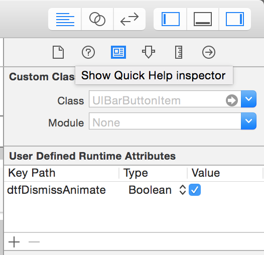
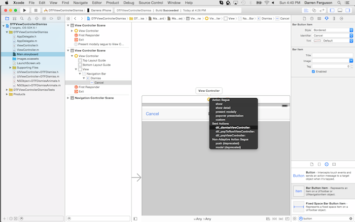

When working with UIViewControllers one of the most used pieces of functionality is dismissing the view controller. As more and more projects where created it was noticed that the same piece of code was continually being written over and over again.
Dismiss Modal View Controller Code
- (IBAction)dismiss:(id)sender
{
[self dismissViewControllerAnimated:YES];
}
The IBAction from the above code will allow the user to attach an event from the Interface Builder to this method and dismiss the currently displayed view controller. Since animated is 'YES' it will perform a default iOS animation unless you have overridden the animation in your UIViewController delegate.
It was therefore determined that a category could be created on the UIViewController object that would have this code already pre-written and hence you would only ever have to include the category in your project and the functionality would be there in one place. This category would be very simple incorporating the code written above along with two other useful category methods. The full category is shown below.
@implementation UIViewController (DTFDismiss)
- (IBAction)dtf_dismissViewController:(id)sender
{
[self dismissViewControllerAnimated:YES completion:nil];
}
- (IBAction)dtf_popViewController:(id)sender
{
[self.navigationController popViewControllerAnimated:YES];
}
- (IBAction)dtf_popToRootViewController:(id)sender
{
[self.navigationController popToRootViewControllerAnimated:YES];
}
@end
The two extra category methods associated with the UIViewController are based on using a UINavigationController
with the functionality and pop the current view off the UINavigationController stack or alternatively the
second option will pop all of the UIViewControllers off the UINavigationController stack and return you to
the root View Controller for the UINavigationController.
Controlling the Animated Portion
From the above code snipet you only have the ability to set the Animation to 'YES' in its current state which might not be the desired behavior you wish. From a developer perspective this is a limitation since the methods would have to be duplicated with the appropriate 'NO' or 'YES' for each animation depending which is not what we want to achieve in any helper methods being created. Since the main aspect of this library is to allow you to utilize the Storyboard it would be better if the library also allowed you to control the animation property from the Storyboard. Initially for this it was assumed you could just put a property in the Storyboard key/value pairs for the object and this would allow you to have access to what the user wished.
Putting the above key path into the Storyboard file as shown above will cause the application to crash when the view controller / specifically the button is unarchived from the Storyboard file. The reason for this is the property does not exist on the button and hence when it is set the button does not respond to the selector and the application crashes. In order to get around this issue we need to create a category on the objects that we wish this functionality from the Storyboard upon. In this case it was determined to put the category on NSObject since this covers all of the necessary objects because UIBarButtonItem does not inherit from UIView so NSObject is the first in both UIButton and UIBarButtonItem hierarchies that matches both of the items most likely to utilize this functionality.
The NSObject+DTFDismissAnimate category utilizes the Objective C runtime in order to allow creation of a new property on a class without subclassing the class. Using the Objective C runtime 'objc_setAssociatedObject' and 'objc_getAssociated' methods we can simulate the NSObject class having the new runtime property 'dtfDismissAnimate'. As seen below the category is using NSNumber's to store the value. This is because we cannot associate anything which is not an object and NSNumber will store BOOLEAN values and allow us to retrieve them as and when required.
@interface NSObject (DTFDismissAnimate)
@property (nonatomic, assign) BOOL dtfDismissAnimate;
@end
#import <objc/runtime.h>
static const void *kDTFDismissAnimateKey = &kDTFDismissAnimateKey;
@implementation NSObject (DTFDismissAnimate)
- (void)setDtfDismissAnimate:(BOOL)dtfDismissAnimate
{
objc_setAssociatedObject(self, kDTFDismissAnimateKey, @(dtfDismissAnimate), OBJC_ASSOCIATION_RETAIN);
}
- (BOOL)dtfDismissAnimate
{
NSNumber *associated = objc_getAssociatedObject(self, kDTFDismissAnimateKey);
return associated ? [associated boolValue] : NO;
}
@end
As can be seen the header file just declares the property 'dtfDismissAnimate' as a BOOL property. This property will be used as any other property on an object for holding the value of the animation. In the implementation of the category we declare a static constant key that shall hold the value of the property on the object. We have to implement the getter and setter ourself since Objective C will not do it for us. The getter is just a simple lookup on the object for the value associated with the 'kDTFDismissAnimateKey'. If a value exists it will be returned otherwise a default of 'NO' is returned since we cannot return 'nil' when the return type is not an object. Now we have the category defined running the application and loading the view controller containing the button with our 'dtfDismissAnimate' key path will no longer crash the application but allow the UIViewController category to retrieve the value from the user defined Storyboard value and either animate or not animate the transition of dismissing the view controller.
Storyboard Setup
Once you have all of the files setup in your project, you can now utilize the storyboard to setup dismissing the modal view controller. Dragging from the UIBarButtonItem in the case below to the UIViewController will popup the choices and inside the actions choices you will see the three choices made available by the category. Choosing the 'dtf_dismissViewController' will allow when running the application to dismiss the view controller and if you set the animation property as shown above then this will determine whether the view controller is dismissed with an animation or not.
The full code for the category can be found here. There is also a sample project that will show you the category in action